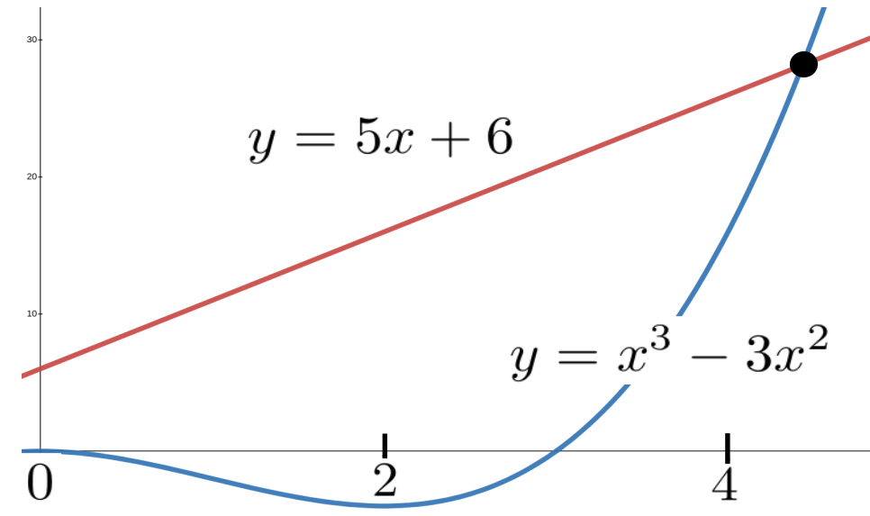
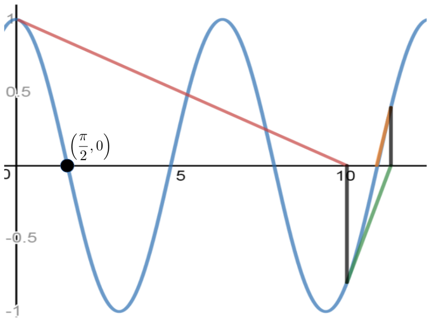

When Calculus came along, Newton realized that his new invention could be used to approximate solutions to equations by a particularly simple method now called, reasonably enough, Newton’s Method.
Subsection7.2.1The Idea Behind Newton’s Method
We will use Newton’s Method to “re–invent†the Babylonian square root algorithm and, more importantly, to generalize it. Here’s the essential idea: We know how to find the root of a linear equation like \(ax+b=0\text{.}\) We want to use this knowledge to approximate the root of a nonlinear equation. As with the rest of Calculus this means that the Principle of Local Linearity is the postulate underlying Newton’s Method.
For our purposes this means that we can approximate the coordinates of points on a curve with the coordinates of points on the line tangent to the curve when the the point of tangency is nearby. Moreover this approximation gets better as we get closer to the point of tangency.
Before we return to the square root problem we consider the problem of approximation more broadly.
Example7.2.1.
Most mathematical software will accept the equation \(x^3-3x^2=5x+6\text{,}\) whose graph is shown below, as input and give back the approximate solution \(x=4.433\) at the click of a button. As a result it is easy to get the impression that this is a a simple problem. But, imagine yourself back in the late \(17\)th century for a moment. The only computation technology available is paper and pencil. How would you solve this problem? How would you even generate an approximate solution?
One possibility is to graph \(y=x^3-3x^2\) and \(y=5x+6\) on the same set of axes and look for the value of \(x\) where the two graphs intersect as in the figure below.

This seems like a good idea until we actually try it. Immediately we realize that accurately graphing even simple equations would have been an almost insurmountable task in those days. We clearly used modern technology to draw the graph pictured. Drawing it by hand accurately enough to glean useful information from it would have been virtually impossible.
Here’s another idea. If we rearrange the equation just a little we get
Now define \(f(x)\) to be the expression on the left of equation (7.1)): \(f(x) = x^3-3x^2-(5x+6)\text{.}\) The graph of this function, seen below, will cross the \(x\)–axis (that is \(f(x)=0\)) at the same \(x\) coordinate where the equation \(x^3-3x^2 = 5x+6\) is satisfied. This simple observation allows us to think of the problem in a slightly different way: We are looking for the \(x\) value which is a root of the function \(f(x)\text{.}\)
You wouldn’t think such a simple change would help. But it does because now, instead of looking for both the \(x\) and \(y\) coordinates of an intersection point we need only search for the value of \(x\) where the graph of the function \(f(x)=x^3-3x^2-(5x+6) \) crosses the \(x\)–axis. This gives us just a little more information because we know that the \(y\) coordinate is zero if a point is on the \(x\)–axis.
As before we will need an initial guess to get started. Since the root seems to be close to the point where \(x=4\) we’ll use \(r_1=4\) as our first approximation. Now find and sketch the line tangent to \(f(x)\) at \((r_1, f(r_1)=(4,f(4))\) as seen in the sketch above (in red). If our first guess is close enough to the actual root the Principle of Local Linearity guarantees that the tangent line will cross the \(x\)–axis very near to the actual root. So the value of \(x\text{,}\) whatever it is, where the tangent line crosses seems like it would be a pretty good second approximation \(r_2\text{,}\) of the root of \(f(x) = x^3-3x^2-(5x+6)\text{.}\) If we zoom in on this part of our graph, as in the figure, this is easy to see.
Apparently all we have to do now is determine the slope of the line tangent to the graph at \((r_1, f(r_1))=
(4,f(4))\text{,}\) then find the equation of the line and its \(x\)–intercept.
Problem7.2.2.
Show that in Example 7.2.1 an equation of the line tangent to \(f(x)\) at \(r_1=4\) is
Our second approximation (\(r_2\)) to the root we seek will be the \(x\) coordinate of the point where the graph of equation (7.2) crosses the \(x\)–axis. That is, where \(y=0.\) Set \(y=0\) and show that the line in equation (7.2) crosses the \(x\)–axis at \(r_2= \frac{10}{19}+4\approx 4.526\text{.}\)
The approximation we found in Problem 7.2.2 is better than our original guess of \(r_1=4\text{,}\) but it is still not great since \(f(4.526) \approx 2.6\text{,}\) whereas if we’d found the actual root, \(r\text{,}\) we’d have \(f(r)=0.\)
But we don’t have to stop there, and the pattern should be clear. If we wanted a more accurate approximation we could use \(r_2\) to generate an \(r_3,\) and so on. We stop when our approximation is accurate enough for our purposes.
Problem7.2.3.
(a)
Find the equation of the line tangent to the function \(f(x)=x^3-3x^2-(5x+6)\) at \(r_2=4.526\) and use this to show that our third approximation to the root of \(f(x)\) is \(r_3\approx 4.436\text{.}\)
(b)
Repeat part (a) using the line tangent at \(r_3=4.436\) to obtain the next approximation \(r_4\text{,}\) but this time round it off to \(6\) decimal places. (You will need \(6\) digits for part (d).
(c)
If you’ve done it correctly, you will notice that \(r_2\gt r_3\gt r_4\text{.}\) Does this surprise you? Explain.
(d)
Use your favorite computational software to find an approximation to the root of \(f(x)=x^3-x^2-(5x+6)\) to \(6\) decimal places. Compare your \(r_4\) to this approximation. How close did you come?
When computing approximations our goal is to compute good approximations efficiently, not to do a lot of arithmetic. We’d actually like to avoid doing arithmetic as much as possible. So it will be worth the effort needed to organize our computations as much as we can. Fortunately this is not hard to do.
Problem7.2.4.
Suppose we have used Newton’s Method repeatedly and found the \(n\)th approximation, \(r_n\text{,}\) of the the root (the \(n\)th iterate) of some generic function \(y=y(x)\) as shown in the following figure.
Figure7.2.5.
We’d like to find a formula to compute the next iterate, \(r_{n+1}\text{,}\) without having to draw the sketch and solve a new equation.
(a)
Show that the equation of the line tangent to the curve \(y=y(x)\) at the point \((r_n, y(r_n))\) can be written in the form
If we get lucky and \(r_n\) is the actual root of the function \(y(x)\) (not just an approximation). Explain what happens at the next iteration if \(r_n\) is not the root.
In Section 5.6 we introduced Lagrange’s ‘prime’ notation for the derivative:
We still prefer differential notation seen in equation (7.5) for most purposes so in the next chapter we will switch back to it, but the prime notation used in equation (7.4) is a little smoother for our present purpose.
We summarize the foregoing succinctly as follows:
Algorithm7.2.6.Newton’s Method.
Given a differentiable function, \(y=y(x),\) with a root at \(x=r\) we can approximate \(r\) as follows.
One reason for writing down Newton’s Method in this compact form is that this makes it easier to program into a computer.
As intimidating as the general formula might first appear, remember that ultimately we are simply constructing and solving a single linear equation. This is clear from the derivation of the formula. The apparent complexity appears only because we have arranged to construct and solve the equation in a single step.
Newton’s Method works because the property of being the root of a function is a local, not a global property. If our approximation, \(r_n,\) is quite close to the root we seek then we can safely assume that the curve and its tangent line are practically the same (at least, most of the time). This is, of course, the Principle of Local Linearity again.
At the end of step \(2\) we used the phrase “until the desired level of accuracy is obtained.†Clearly we are being cagey. How can we tell when we have an estimate which is accurate to any level of precision, let alone the desired level? This is a harder question than it probably appears to be. For that reason we will not be looking into it very deeply. For our purposes it will be good enough to assume that if the first four digits to the right of the decimal have not changed from one iteration to the next then our estimate is accurate to four decimal places.
Problem7.2.7.
Obviously, \(f(x) = x-\sqrt{2}\) has a root at \(x=\sqrt{2}.\) But if we want to compute \(\sqrt{2}\) this is not a good choice of function to apply Newton’s Method to. Explain why not. What would be a good choice for \(f(x)\) if we wish to approximate \(\sqrt{2}\text{?}\)
Drill7.2.8.
Create a function which has a root at each of the following numbers and use your function to compute each to \(5\) decimals using Newton’s Method.
\(\displaystyle \sqrt[5]{7}\)
\(\displaystyle \sqrt[3]{5} \)
\(\displaystyle 6^{2/3}\)
\(\displaystyle \sqrt{27}\)
\(\displaystyle \sqrt[7]{2}\)
\(\displaystyle \pi\)
Drill7.2.9.
Start with \(r_1=4\) and use Newton’s Method to compute the next four approximations (\(r_2\text{,}\)\(r_3\text{,}\)\(r_4\text{,}\) and \(r_5\)) of the roots of each of the following functions. Compare these with your results in Problem 7.1.3. Which algorithm seems to be more accurate after four iterations?
\(\displaystyle f(x)=x^2-5\)
\(\displaystyle f(x)=x^2-10\)
\(\displaystyle f(x)=x^3-7\)
\(\displaystyle f(x)=x^9-11\)
\(\displaystyle f(x)=x^5-x^2-8\)
\(\displaystyle f(x) = x^3+3x^2-17x+6\)
Drill7.2.10.
Use Newton’s Method to approximate the root of each of the following functions to at least four decimal places on the interval given.
\(f(x) = \frac{x^2-x+2}{x^2(x-1)}-3\) on \([0,2]\)
\(f(x) = x^\frac13+\cos(2x) -1/2\) on \([0,3/2]\)
\(f(x) = (x-1/2)\cos\left(x^2+2x\right)+1\) on \([-2,0]\)
Drill7.2.11.
As you can see from the sketch above, the graphs of \(y=x\) and \(y=\cos(x)\) intersect exactly once. We want to use Newton’s Method to find an approximation of the coordinates of the point of intersection.
Then use this formula to approximate the coordinates of the point of intersection to \(3\) decimal places.
Problem7.2.12.Find the Pattern.
Figure7.2.13.
(a)
Apply Newton’s Method to the function \(f(x)=x^2-a\text{,}\) shown above, to determine the iteration formula for approximating \(\sqrt{a}\text{.}\) Show that this is precisely the \((n+1)\)st iteration you get when using the Babylonian method:
Use Newton’s Method on the function \(f(x)=x^3-a\) to obtain the iteration formula: \(\displaystyle
r_{n+1}=\frac{1}{3} \left(2r_n+\frac{a}{r_n^2} \right)\) for approximating \(\sqrt[3]{a}\text{.}\) Notice that \(\frac{1}{3} \left(2r_n+\frac{a}{r_n^2} \right)\) is the average of \(r_n, r_n\text{,}\) and \(\frac{a}{r_n^2}\text{.}\)
(c)
Obtain the iteration scheme \(\displaystyle
r_{n+1}=\frac{1}{4} \left(3r_n+\frac{a}{r_n^3} \right)\) for approximating the fourth root of \(a.\) Is this also an average? Of what?
(d)
Now find an iteration scheme to find the \(k\)th root of \(a,\) if \(a\) is a positive number, and \(k\) is a positive integer.
If the initial guess is reasonably close to the root Newton’s Method finds a very accurate approximation to the root of a function in just a few iterations most of the time. This made it extremely useful in the \(17\)th century when such computations were done by hand. Indeed, it computes the square root of a number pretty quickly even if the initial guess is very bad. For example in Figure 7.2.13 the blue curve is the graph of \(f(x)=x^2-2.\) We start with an initial guess of \(r_1=5\) (obviously a terrible guess) and find the \(x\) intercept of the red tangent line to find the next guess, \(r_2=2.7\) which is better but still terrible. Repeating we generate the green tangent line at \((r_2,f(r_2))\) which crosses the \(x\)–axis at \(r_3=
1.72.\) Finally we generate the orange tangent line at \((r_3,f(r_3))\) which crosses the \(x\)–axis at \(r_4=1.44\) which is correct to one decimal. If we continue one more iteration (not shown) we get \(r_5=1.4141\) which is correct to three decimals.
But this paper–and–pencil procedure is not as simple as handing the problem off to your favorite computational software so a natural question to ask is, “Why bother? why should we learn this?”
The answer is that whatever software you end up using will be performing either the computations above or something very like them. And these Numerical Methods are not 100% reliable.
However if you are familiar with the limitations of the algorithm(s) being used you will also be aware of the limitations of your software. Perhaps more importantly, you are less likely to believe a wrong answer when you get it. Depending on what you are computing an incorrect approximation could mean anything from a minor annoyance (if you are calculating \(\sqrt{2}\) just for fun) to a deadly disaster (if you are designing a control procedure for a self–driving car).
Problem7.2.14.
Even if you don’t have any intuition into a given problem a more than cursory understanding of the algorithm itself can be helpful. For example, show that when Newton’s Method is used:
(a)
If \(y(r_n)\) and \(y^\prime(r_n)\) have the same sign then \(r_{n+1}\le r_n\text{.}\)
(b)
If \(y(r_n)\) and \(y^\prime(r_n)\) have opposite signs then \(r_{n+1}\ge r_n\text{.}\)
(c)
Suppose you are trying to compute a numerical approximation of \(\sqrt{2}\) using an implementation of Newton’s Method, but you accidentally enter \(x^2+2\) as your function (instead of \(x^2-2\)). Explain how you can use the results of part (a) and part (b) to see that the algorithm is failing at the third iteration.
So, how do you know if you should trust the approximation you get back from your favorite software? First, be aware of what a reasonable answer should be. In Example 7.2.1 it is clear that the root must be positive. If software tries to tell you that it is equal to \(-2.5\) you know it is lying. Second be aware of the ways that an approximation method might fail.
For example, Newton’s Method is not perfect. It can fail in two distinct ways that we’ll call Spectacular Failure and Subtle Failure. Let’s take a look at them in turn.
Subsection7.2.2Spectacular Failure
Newton’s Method can fail spectacularly in two distinct, but related, ways. The first is very easy to spot.
Problem7.2.15.
Suppose we want to find the root of \(y=x^2-4x+7\) and our initial guess is \(r_1=2\text{.}\) Investigate, both algebraically and graphically, what happens when we apply Newton’s Method to this problem. Describe the results of your investigations.
Because Newton’s Method requires that we divide by \(y^\prime(r_n)\) we will get an error if it happens that \(y^\prime(r_n) =0\text{.}\) We call this a spectacular failure because it is easy to spot whether we do the computation with a computer or with paper and pencil. Indeed, modern computer software is very adept at alerting us to division by zero errors.
The second kind of spectacular failure is exemplified by the following problem.
Problem7.2.16.
The only root of the function \(f(x)=x^{1/3}\) is zero.
(a)
Use Newton’s Method with the initial guess, \(r_1=1\) to see if it converges to zero.
Hint.
It won’t.
(b)
Write down a formula for the computation in step 2 from Newton’s Method for this function. Use this to explain why the method will not converge no matter what non–zero initial guess is used.
Obviously we don’t need to use Newton’s Method to compute the root of \(f(x)=x^{1/3}.\) The point of Problem 7.2.16 is that Newton’s Method will not find the root no matter how close our initial guess is. Instead it will continue to generate alternately positive and negative “approximations†to zero, that are farther and farther from zero.
Subsection7.2.3Subtle Failure
The other way Newton’s Method fails can be quite subtle. The best way to demonstrate this is with an example.
Example7.2.17.
Suppose we wish to compute \(\frac{\pi}{2}\) by finding the smallest positive root of \(\cos(x).\) If we start with an initial guess of \(r_1=0.1\) (not a great first guess, but it’s not obviously horrible either) we get \(r_2=10.07,\) which certainly seems like it might be a problem since \(\frac{\pi}{2}\approx 1.7.\) If we ignore this and continue we get \(r_3= 11.4,\) and \(r_4=10.97.\)
What’s going on here? The numbers seem to be converging, but they are not converging to the answer we intended to find. The figure below shows what the difficulty is.

In a nutshell, our initial guess was too far away from the root. The slope of the tangent line at \((0.1, \cos(0.1))\) is \(-\sin(0.1)\approx -0.1\) which means that the tangent line (in red) decreases from left to right, but also that its slope is very shallow. Thus the tangent line crosses the \(x\)–axis at about \(r_2=10.07,\) very far from the root we seek. Now it happens that \(10.07\) is actually pretty close to another root of our function: \(7\pi/2.\) So continued iterations of Newton’s Method will settle in on the root at \(7\pi/2\text{.}\) But the damage has already been done. We’ve found a legitimate root but not he one we intended to find.
We call this a subtle failure because Newton’s Method will converge without complaint. None of the computations will seem suspicious. A software implementation of Newton’s Method for this problem using this initial guess will return a reasonable looking, but wrong, number. It is glaringly obvious what goes wrong when we draw the pictures. But when we use software to compute the root most of the time there will be no pictures. Notice that, unlike the spectacular failure above there is nothing in the calculations being performed that could be detected in software to let the human in charge know that things have gone wrong. So, if you rely on software it is essential that you take the time to consider the “reasonableness†of the answer you obtain. If this is not understood there is a real risk that you could accept a ridiculous answer as correct.
The problem of converging to a wrong answer is particularly acute when a function has two roots which are very close together, for example if \(f(x) = (10x^2-21x+11)(x-0.05)(x^3+7).\)
From the previous examples it should be clear that it is important that the initial guess be close enough to the root we seek to guarantee that the iterations will converge to that root. This, of course, begs the question, “How close should our initial guess be?†This is actually a hard question. Since we don’t yet possess all of the knowledge and skills needed we can’t answer it in any definite way. So we’ll just say that in general your initial guess should be as close as you can make it.
But take care. As we saw in Problem 7.2.16 sometimes even having a very accurate first guess is not sufficient.
Problem7.2.19.
(a)
Use Newton’s Method to find approximations to the positive roots closest to zero of each of the following functions. (Clearly you can use Algebra and Trigonometry to compute them exactly. The point here is to see how good our guesses must sometimes be in order for Newton’s Method to work.}
\(\displaystyle y(x)=x(x^2-.01)\)
\(\displaystyle y(x)=(x^2-9)(x^2-.01)\)
\(\displaystyle y(x)=x^2\sin(4x)\)
\(\displaystyle y(x)=x^2\cos(4x)\)
(b)
If we were to next ask you to find approximations of the negative roots closest to zero of each of these functions would you need to use Newton’s Method again? Explain.
Problem7.2.20.
Do not try to answer the questions in this problem analytically. Use a graphing calculator, or graphing software to explore these questions visually. The function
has exactly one real root and it is between one and two.
(a)
Show that with an initial guess, \(r_1 \gt 2\text{,}\) Newton’s Method almost never converges to the root.
(b)
We said “almost never†in part (a) because there is a small interval of numbers greater than \(2\) with the property that Newton’s Method will converge if \(r_1\) is any number in the interval. Find an interval that works. It doesn’t have to be the largest possible interval.
(c)
Show that if you start with an initial guess of \(r_1=2\) or \(r_1=3\) Newton’s Method will not even generate the first iterate: \(r_2.\) Explain.
Problem7.2.21.
Suppose that a cubic polynomial has three real roots, \(a\text{,}\)\(b\text{,}\) and \(c\) and that two of them, \(a\) and \(b\) are known. We wish to approximate the third. Show that if we take the average of \(a\) and \(b\) as our initial guess, Newton’s Method will find the exact value of the third root, \(c\text{,}\) in one iteration.